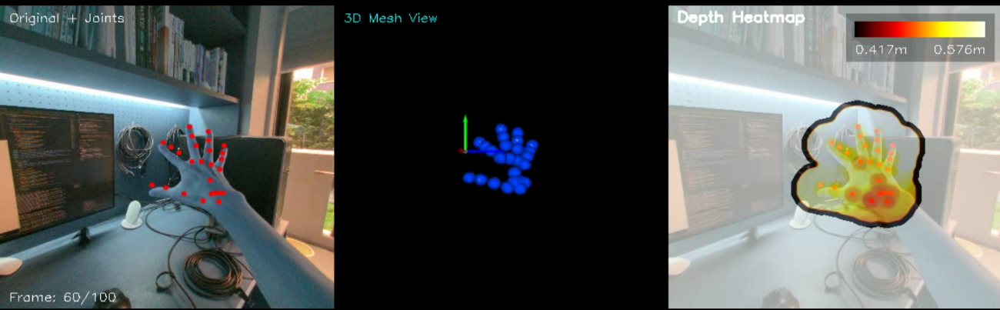

Visualization
Real-Time Demo

Real-time 3-panel view — hand joints overlaid on VR scene, 3D mesh rendering, and depth heatmap with frame counter

Three-panel live visualization of hand tracking, mesh reconstruction, and depth estimation
Original + Joints
Hand keypoints with color-coded joint tracking
3D Mesh View
Reconstructed surface mesh in real time
Depth Heatmap
0.100 m to 0.600 m range depth visualization